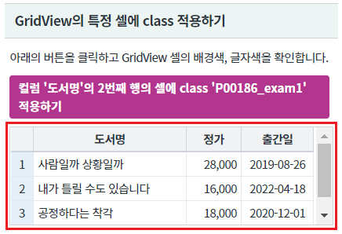
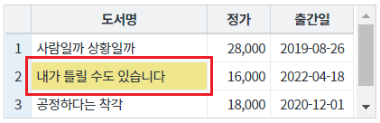
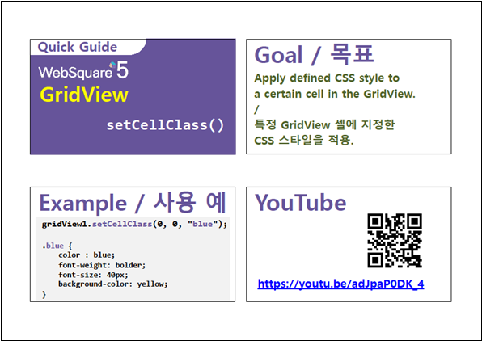

GridView의 특정 셀에 class를 적용하는 예제입니다. 이 기능은 함수 setCellClass를 호출하여 사용할 수 있습니다.
GridView의 특정 셀에 class 적용하기
영역 [GridView의 특정 셀에 class 적용하기]의 GridView를 확인합니다.
GridView의 셀에 별도의 스타일이 지정되어 있지 않습니다.
[브라우저(Chrome) 실행 예시]

버튼 컬럼 '도서명'의 2번째 행의 셀에 class 'P00186_exam1' 적용하기을 클릭합니다.
컬럼 '도서명'의 2번째 행의 셀에 class 'P00186_exam1'이 적용됩니다.
[브라우저(Chrome) 실행 예시]

프로젝트에서 import하고 있는 CSS 파일에 아래와 같이 class를 정의합니다.
이 예제에서 사용할 class명은 'P00186_exam1'입니다.
GridView의 함수 setCellClass로 class를 적용하면 td에 추가됩니다. 기 선언된 공통 class의 selector 우선 순위에서 밀릴 수 있기 때문에 구체적으로 선언하는 것이 좋습니다.
이 예제에서는 GridView에 추가되는 class인 'w2grid'를 상위 class로 추가하였습니다.
[소스 코드 예시]
/* 다음의 경로에서 class를 확인할 수 있습니다. */ /* [프로젝트 경로]/WebContent/css/example.css */ /* P00186.xml 예제 */ .w2grid .P00186_exam1 {color: #fffaf0; background-color: #db7093;}
GridView의 함수 setCellClass을 사용합니다.
[소스 코드 예시]
//예제 파일의 스크립트 "scwin.btn_ex1_onclick"를 참고하세요. //GridView 'grd_exam1'의 컬럼 '도서명'의 2번째 행의 셀에 class 'P00186_exam1'을 적용합니다. grd_exam1.setCellClass(1, "book_name", "P00186_exam1");
setCellClass( rowIndex , colIndex , className )
[웹스퀘어5 SP5 개발 가이드] GridView
링크 : https://docs1.inswave.com/sp5_user_guide/bc10c1b82c9a2a0b#e1c4658baf7e726f
[웹스퀘어5 SP5 개발 가이드] GridView 셀
링크 : https://docs1.inswave.com/sp5_user_guide/86bdcf48029b958b#968539217b7575c2
[웹스퀘어5 SP5 개발 가이드] GridView 특정 셀에 지정한 스타일 적용
링크 : https://docs1.inswave.com/sp5_user_guide/86bdcf48029b958b#d594092d9674a355
GridView 특정 셀에 지정한 스타일 적용
링크 : https://youtu.be/adJpaP0DK_4
